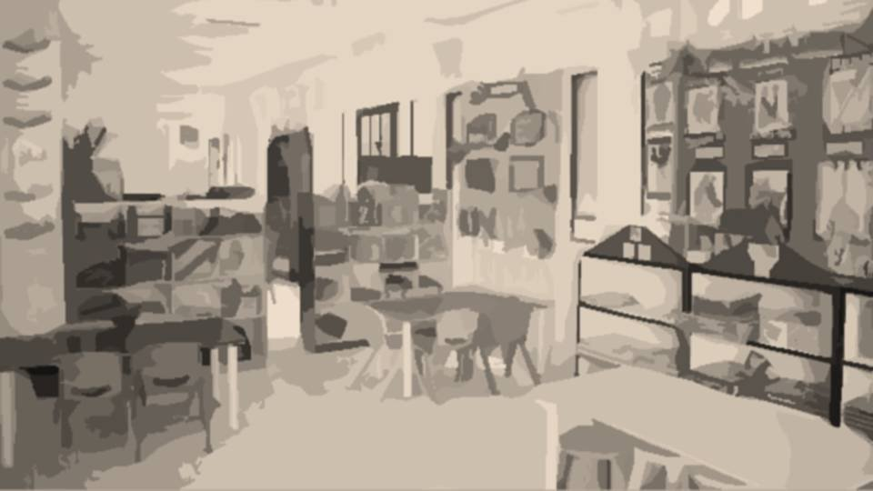
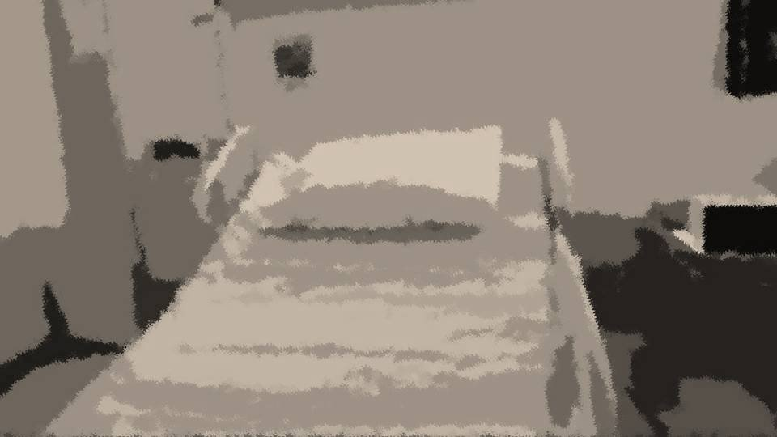
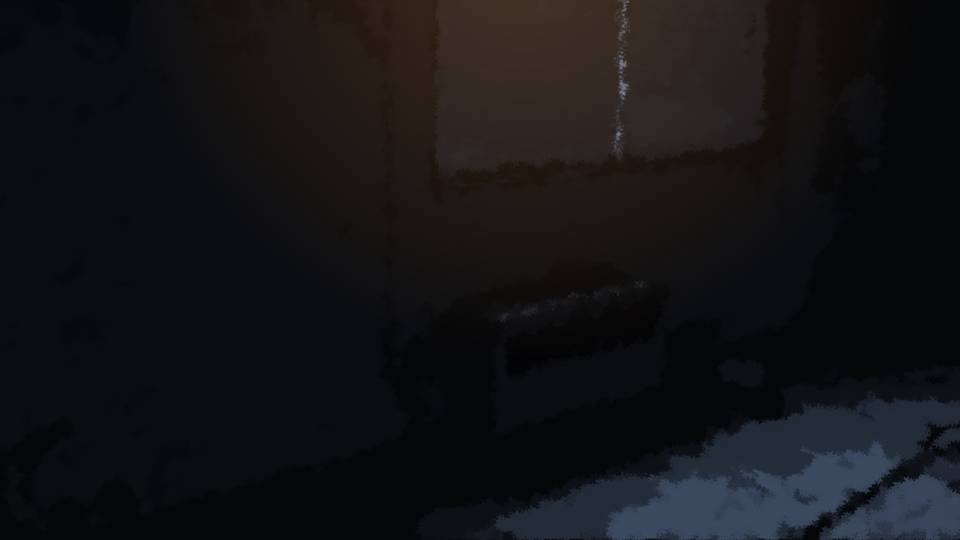
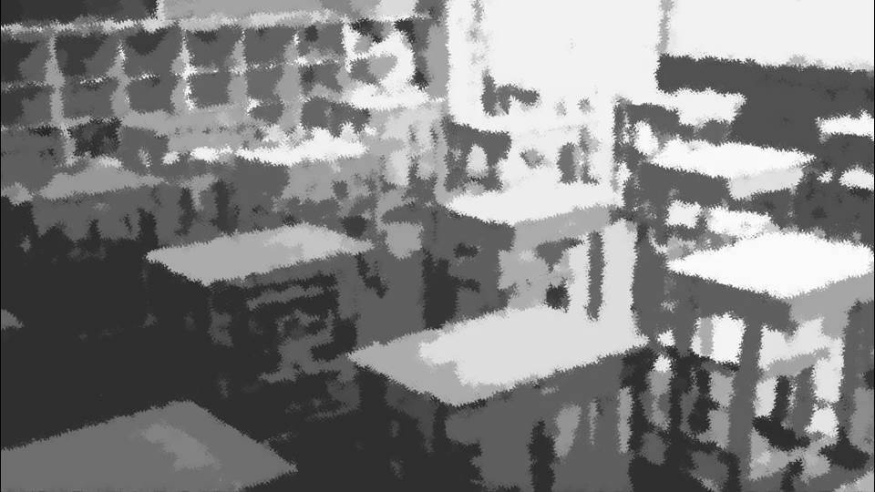
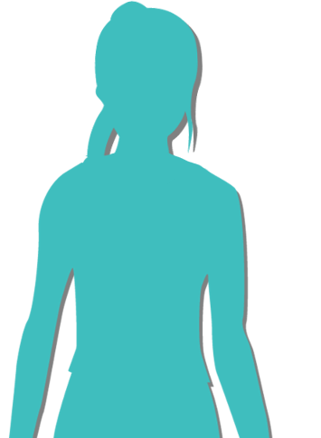
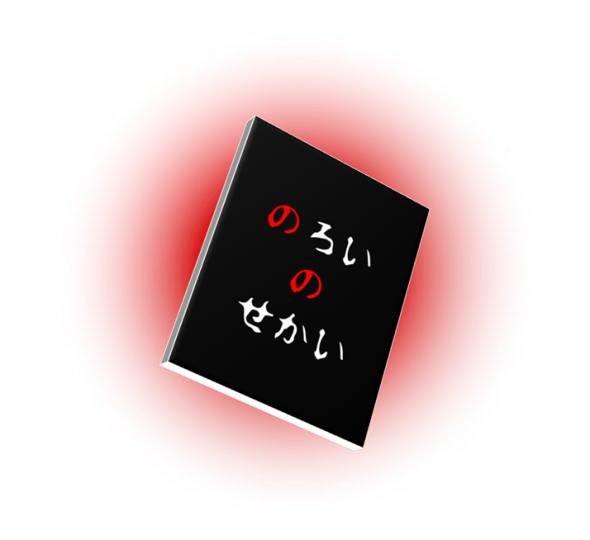
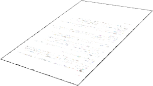
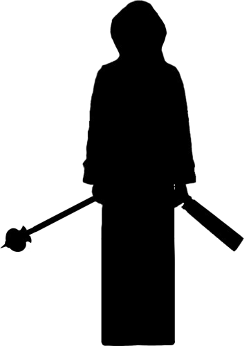
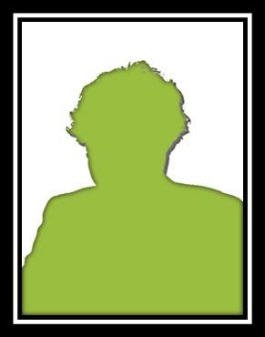

魔女が生まれた日

「やっぱり、言えないよ……」
幼稚園の頃、私となつみの家族とで、中央公園に花見に行ったのだ。
私となつみは風船を持って走り回り、お父さんたちはお酒を片手に休日を満喫していた。
幼稚園の頃、私となつみの家族とで、中央公園に花見に行ったのだ。
私となつみは風船を持って走り回り、お父さんたちはお酒を片手に休日を満喫していた。
そして、あの強風が吹いた――。
穏やかに晴れていた春の中央公園に、突如大風が吹き荒れたのだ。
なつみの風船はその風にさらわれ、中央公園の御神木に引っかかってしまい――。
なつみは大泣きしてしまった。
なつみの風船はその風にさらわれ、中央公園の御神木に引っかかってしまい――。
なつみは大泣きしてしまった。
「なつみ、泣かないでよ。私の風船あげるから」
それでもなつみは泣き止まなかった。
そんなやりとりを見た私のお父さんが、御神木に登り――。
それでもなつみは泣き止まなかった。
そんなやりとりを見た私のお父さんが、御神木に登り――。
私のお父さんは、御神木に引っかかった風船を取ろうとして、木から落ちて亡くなった。
その現場は凄惨なもので、落ちた時に、お父さんは公園の柵に首を貫かれた。
お父さんの血しぶきを、下にいたなつみが全身に浴びてしまい、その時から、なつみは桜を怖がるようになってしまった。
その現場は凄惨なもので、落ちた時に、お父さんは公園の柵に首を貫かれた。
お父さんの血しぶきを、下にいたなつみが全身に浴びてしまい、その時から、なつみは桜を怖がるようになってしまった。
4歳だったなつみはそのことを覚えていないようだ。
でも私はうっすらと覚えている。
でも私はうっすらと覚えている。
首の傷口が体重に耐えきれず広がっていき、最後は血しぶきをあげた。
私のお父さんが死んだことも、なつみは今も知らない。
海外に単身赴任しているということになっている。
私のお母さんと、なつみの両親がそのように隠すことにしたらしいが……。
一体いつまで隠すつもりなのだろうか。
海外に単身赴任しているということになっている。
私のお母さんと、なつみの両親がそのように隠すことにしたらしいが……。
一体いつまで隠すつもりなのだろうか。
お父さんが死んでから間もなく、お母さんとこの元木町を離れ、飯沢県の女ケ沢市に引っ越した。
お父さんを亡くして病んでしまった、お母さんの療養のためだ。
心の病を専門にしている病院があるのと、お父さんの故郷である荒田集落も元木町より近いのだ。
お父さんを亡くして病んでしまった、お母さんの療養のためだ。
心の病を専門にしている病院があるのと、お父さんの故郷である荒田集落も元木町より近いのだ。

お母さんは入院し、私は病院近所の児童養護施設に入った。
施設には、私と似たような境遇の子供が多く、すぐになじむことができた。
でもお母さんと離れての寝泊まりは、まだ未就学児の私には辛いものだった。
施設には、私と似たような境遇の子供が多く、すぐになじむことができた。
でもお母さんと離れての寝泊まりは、まだ未就学児の私には辛いものだった。


お母さんは病室の外からずっと葉桜を眺めていた。
お父さんの死が、とてもショックだったようだ。
何とかお母さんの力になりたくて。
早く元気になってもらい、元木町に帰りたくて――。
お父さんの死が、とてもショックだったようだ。
何とかお母さんの力になりたくて。
早く元気になってもらい、元木町に帰りたくて――。
私はお母さんを元気づけるために、絵本で読んだおまじないをかけてあげた。
その時だけは、お母さんは笑顔でこちらを向いてくれた。
それだけでも、私は嬉しかった。
その時だけは、お母さんは笑顔でこちらを向いてくれた。
それだけでも、私は嬉しかった。
施設にあった色々な絵本を見て、おまじないを探した。
その頃から、知るようになった。
おまじないには人を困らせる「呪い」があることを。
その頃から、知るようになった。
おまじないには人を困らせる「呪い」があることを。

私が小学生になる時期には、お母さんの病気もだいぶ良くなっていた。
お母さんは退院し、七海荘と言うぼろぼろのアパートへ引っ越した。
古いアパートでも、これでまた前の生活が戻ってくる。
お母さんがちゃんと元気になれば、また元木町に戻って、なつみと遊べる。
そんな期待に胸を膨らませていたのだが……。
お母さんは退院し、七海荘と言うぼろぼろのアパートへ引っ越した。
古いアパートでも、これでまた前の生活が戻ってくる。
お母さんがちゃんと元気になれば、また元木町に戻って、なつみと遊べる。
そんな期待に胸を膨らませていたのだが……。

「おい御子神！ お前、変な神様に祈ってるんだろ！？」
「えー！ こいつの家、あの邪教のやつなの！？」
「うわ……関わらない方がいいね……」
「ね、ねえ。御子神さんをいじめるのはダメだよ……」
「えー！ こいつの家、あの邪教のやつなの！？」
「うわ……関わらない方がいいね……」
「ね、ねえ。御子神さんをいじめるのはダメだよ……」
私はクラスメイトになった子がいじめられているのをかばった。
それがきっかけで、間もなく私がいじめの標的となった。
それがきっかけで、間もなく私がいじめの標的となった。
子どもというのは、大人の目に入らないところでいじめる。
しかも私1人が先生に訴えたところで、他の大多数が「違う」と言えば、先生も私の思い過ごしだと考える。
さらに悪いことに―― これは後から知ったことだが―― 私をいじめていた児童の親がPTA役員だったらしい。
いわゆるモンスターペアレントと言われる親。
事態が好転することもなかった。
しかも私1人が先生に訴えたところで、他の大多数が「違う」と言えば、先生も私の思い過ごしだと考える。
さらに悪いことに―― これは後から知ったことだが―― 私をいじめていた児童の親がPTA役員だったらしい。
いわゆるモンスターペアレントと言われる親。
事態が好転することもなかった。
私はお母さんの前では、明るく振る舞うようにしていた。
お母さんには早く元気になってもらわなくてはならないからだ。
お母さんには早く元気になってもらわなくてはならないからだ。
2年生を目前にしたある日。

「ねえねえお母さん！ なつみももうすぐ小学生だよね！？」
私の親友は、元木町で別れてからもなつみだった。
でも、お母さんはなつみの話をすると、いつも無表情になってしまうのだ。
私の親友は、元木町で別れてからもなつみだった。
でも、お母さんはなつみの話をすると、いつも無表情になってしまうのだ。
「そっか……なつみちゃんももう小学生ね。春花は学校楽しい？」
「…………。 うん、楽しい！」
「…………。 うん、楽しい！」
「本当に……本当に楽しいの？」
「…………。 うん……楽しいよ……」
「…………」
お母さんの目は見透かすような眼差しだった。
いつも優しいお母さんのその目が、少し怖かった。
「…………。 うん……楽しいよ……」
「…………」
お母さんの目は見透かすような眼差しだった。
いつも優しいお母さんのその目が、少し怖かった。
「春花が楽しいなら、それでいい。
でも、辛いことがあったら、ちゃんと言ってね」
「…………。 うん……」
その一言で、私の笑顔は泣き顔に変わってしまった。
やっぱり今頼れるのは、お母さんしかいないのだ。
お母さんにいじめのことを話した。
「…………。 うん……」
その一言で、私の笑顔は泣き顔に変わってしまった。
やっぱり今頼れるのは、お母さんしかいないのだ。
お母さんにいじめのことを話した。
「そう、春花は優しい子ね。いじめられてる子を助けるなんてとても偉いわ。
そういうことがあるなら、おまじないをかけなさい。春花は、おまじないが得意でしょ？」
お母さんは後日、1冊の本をくれた。

『のろいのせかい』という児童書のくせに、妙に無骨な本だった。
パラパラと本をめくると、児童書レベルではあったが悪魔召喚や人を呪い殺す手法などが書かれていた。
パラパラと本をめくると、児童書レベルではあったが悪魔召喚や人を呪い殺す手法などが書かれていた。
「ありがとう、お母さん。
でもね、おまじないはお母さんを助けるために使うの」
「そう、いい子ね、春花は」
そう言ったが、心の中ではとても興味を持っていた。
もし、呪いでいじめがなくなり、お母さんの回復の手助けになるのなら――。
「そう、いい子ね、春花は」
そう言ったが、心の中ではとても興味を持っていた。
もし、呪いでいじめがなくなり、お母さんの回復の手助けになるのなら――。

――数日後、私の我慢も限界に達した。
いや、呪いという武器を手にした私には、自然な流れだったのかもしれない。
方法は簡単。紙人形に相手の名前を書き、そこに唾を吐きかける。
そして亡くなったご先祖様に祈りを捧げる。
それで特にいじめのひどい2人は私の前から消える。
いや、呪いという武器を手にした私には、自然な流れだったのかもしれない。
方法は簡単。紙人形に相手の名前を書き、そこに唾を吐きかける。
そして亡くなったご先祖様に祈りを捧げる。
それで特にいじめのひどい2人は私の前から消える。
「お母さん、真っ白な紙とハサミどこ？」
「真っ白な紙とハサミ？ おまじないをするの？」
「ううん、違うよ。私のおまじないはお母さんを治すために使うの」
「そう……」
その時も、お母さんは見透かすような目だった。
でも、最後まで紙人形のことはシラを切り通した。
「真っ白な紙とハサミ？ おまじないをするの？」
「ううん、違うよ。私のおまじないはお母さんを治すために使うの」
「そう……」
その時も、お母さんは見透かすような目だった。
でも、最後まで紙人形のことはシラを切り通した。
お母さんを助けるためにおまじないを使うのは本当だ。
ただ、それは目的であって、手段がどうであるか――そんなの、言えるはずがないのだ。
ただ、それは目的であって、手段がどうであるか――そんなの、言えるはずがないのだ。

お父さんが亡くなってから、ちょうど2年経った祀耀790年四月八日。
その日私とお母さんは、お父さんの三回忌のために、新村本家のある荒田集落に行っていた。
私はその時、一生懸命お父さんにお祈りした。
あの2人を消してちょうだいと。
お父さんをご先祖様と呼ぶには近すぎる存在ではあったが、その時の私にそんなことは分からなかった。
その日私とお母さんは、お父さんの三回忌のために、新村本家のある荒田集落に行っていた。
私はその時、一生懸命お父さんにお祈りした。
あの2人を消してちょうだいと。
お父さんをご先祖様と呼ぶには近すぎる存在ではあったが、その時の私にそんなことは分からなかった。
いや、呪いなんか抜きにして、お父さんに助けを求めていたのだ。
いじめがなくなり、お母さんが元気になり、早く元木町に戻れますようにと。
いじめがなくなり、お母さんが元気になり、早く元木町に戻れますようにと。
次の日、休校の連絡が入った。
そこで知ったのは、呪った2人の死。何者かに殺されたらしい。
そこで知ったのは、呪った2人の死。何者かに殺されたらしい。
私は嬉しさで打ち震えた。
まさか本当に2人が消えるとは。呪いは……呪いは本当にあるんだ……！
まさか本当に2人が消えるとは。呪いは……呪いは本当にあるんだ……！
私の家にも警察が来たが、当然疑われなかった。
私とお母さんには法要に出席していたというアリバイがあったからだ。
私とお母さんには法要に出席していたというアリバイがあったからだ。
私はその頃から本格的に呪いについて調べるようになった。
やはりそれも学校の図書室にある児童書レベルのものだったが、それでもそんな私を周囲は気味悪がり、いじめもすっとなくなった。
そうだ、私やお母さんの幸せを脅かすやつは消してやれ！
やはりそれも学校の図書室にある児童書レベルのものだったが、それでもそんな私を周囲は気味悪がり、いじめもすっとなくなった。
そうだ、私やお母さんの幸せを脅かすやつは消してやれ！
色々と調べた結果、この前の方法は死神を呼び出す方法だと知った。
より確実に死神を呼び出すためには、紙人形に唾をかけるのではなく、吐瀉物、つまり吐き出したものを塗りつける。
そして近親者の法要が近い日に、呪いをかける。
これで法要の日に、確実に消したい相手を消すことができる。
より確実に死神を呼び出すためには、紙人形に唾をかけるのではなく、吐瀉物、つまり吐き出したものを塗りつける。
そして近親者の法要が近い日に、呪いをかける。
これで法要の日に、確実に消したい相手を消すことができる。
次に私が呪いを実行したのは、小学6年生になったばかりの頃。
11歳ともなると、周囲の子らが親や先生に「気持ち悪い」とある程度筋道を立てて説明できるようになった。
この頃に知ったのだが女ケ沢市は以前、カルト教団が席巻する宗教都市だったらしく、その反動でおまじないだの呪いだので遊ぶ子供は疎まれるのだ。
11歳ともなると、周囲の子らが親や先生に「気持ち悪い」とある程度筋道を立てて説明できるようになった。
この頃に知ったのだが女ケ沢市は以前、カルト教団が席巻する宗教都市だったらしく、その反動でおまじないだの呪いだので遊ぶ子供は疎まれるのだ。
呪った相手は、PTA会長と担任の先生だった。
あの2人は、子供たちや親たちの言いなりになり、私へ遠まわしにいじめを実行してきた。
今度は子供だけではなく、大人まで加担してきたのだ。
あの2人は、子供たちや親たちの言いなりになり、私へ遠まわしにいじめを実行してきた。
今度は子供だけではなく、大人まで加担してきたのだ。
給食費を盗んだ犯人にされたなんてことは当たり前。
クラスメイトの家に盗みに入っただとか、先生たちの車のガラス割ったとか、11歳の私がやるには無理のある言いがかりだった。
そのたびにお母さんは保護者や先生のところへ謝りに行った。
クラスメイトの家に盗みに入っただとか、先生たちの車のガラス割ったとか、11歳の私がやるには無理のある言いがかりだった。
そのたびにお母さんは保護者や先生のところへ謝りに行った。
お母さんだって分かっているはずなのに、ひたすら頭を下げてまわる日々だった。
でもお母さんが私を責めたことは1度もなかった。
それどころか、
「辛いことがあったら、どんなことでも助けてあげるからね」
と、いつも笑顔で言ってくれた。
でもお母さんが私を責めたことは1度もなかった。
それどころか、
「辛いことがあったら、どんなことでも助けてあげるからね」
と、いつも笑顔で言ってくれた。
私たちには引っ越しができるほどの資金もないし、お母さんの気力が尽きかけていた。
このままだと、お母さんがまた病院に逆戻りしてしまう。
このままだと、お母さんがまた病院に逆戻りしてしまう。
それでは、また元木町での生活が遠ざかってしまう。
そうなる前に、PTA会長と担任を消さなくてはならない。
お母さんまで私のせいで苦しむのは、もう耐えられない。
死神……もう一度力を貸して……！
そうなる前に、PTA会長と担任を消さなくてはならない。
お母さんまで私のせいで苦しむのは、もう耐えられない。
死神……もう一度力を貸して……！
――お父さんの七回忌の日、それは起こった。
結果は予想以上だった。
PTA会長は全ての歯を鈍器で砕かれた後、ナイフで刺され絶命。
1か所も即死する場所には刺さらず、苦しみながら失血を待ち、死んだことだろう。
担任は鈍器で四肢をつぶされ、動けなくなったところを口から劇薬を注がれて絶命。
PTA会長は全ての歯を鈍器で砕かれた後、ナイフで刺され絶命。
1か所も即死する場所には刺さらず、苦しみながら失血を待ち、死んだことだろう。
担任は鈍器で四肢をつぶされ、動けなくなったところを口から劇薬を注がれて絶命。
だがここまで来るとさすがに自分でも恐ろしくなった。
自分自身の手で4人を殺害したことに等しい。
この時も警察に紙人形について説明したが、取り合ってくれる様子もない。
自分自身の手で4人を殺害したことに等しい。
この時も警察に紙人形について説明したが、取り合ってくれる様子もない。
こうなってくると、大人たちも私との関わりを避けるようになった。
いじめはなくなっても、私たち親子は、子供たちからも、先生たちからも孤立した。
これは……私の望んでいたことなのだろうか……。
いじめはなくなっても、私たち親子は、子供たちからも、先生たちからも孤立した。
これは……私の望んでいたことなのだろうか……。
――そんな疑問を持ったまま、私は女ケ沢市の公立中学へ進学した。
進学した中学校は、別の小学校の卒業生も入学する学区だった。
だから私の呪いのことを知らない者も多く、また私はいじめられるようになった。
中学生ともなると方法は陰湿で、私の呪いのことを知っても、信じない者も多かった。
だから私の呪いのことを知らない者も多く、また私はいじめられるようになった。
中学生ともなると方法は陰湿で、私の呪いのことを知っても、信じない者も多かった。
「新村、お前あの邪教徒なんだってな！？」
「ほんときもい！ 邪教徒なんて死ねよ」
そんな意味不明な罵詈雑言を浴びせられたが、私はもう、誰も呪わない。
「ほんときもい！ 邪教徒なんて死ねよ」
そんな意味不明な罵詈雑言を浴びせられたが、私はもう、誰も呪わない。
そんな私にも、心の支えがあった。


なつみからの手紙は、いつも私を元気づけてくれた。
唯一の楽しみに、普段の生活を持ち込みたくなかったから、なつみにはいじめのことも、呪いのことも全く知らせていなかった。
しかし、あいつらはなつみまで……！
唯一の楽しみに、普段の生活を持ち込みたくなかったから、なつみにはいじめのことも、呪いのことも全く知らせていなかった。
しかし、あいつらはなつみまで……！
「何、この手紙？ お前友達なんていたの？ こいつも邪教徒なの？」
「返せ！ それは私の……！」
「絶対こいつも邪教徒だろ！ お前きもいけどこいつもきもいわ」
「返せ！ それは私の……！」
「絶対こいつも邪教徒だろ！ お前きもいけどこいつもきもいわ」
「はい教団かいさーん！」
「俺にもやらせろよ！」
私を罵るだけならまだしも、なつみからの手紙を破かれたことがどうしても許せなかった。
「俺にもやらせろよ！」
私を罵るだけならまだしも、なつみからの手紙を破かれたことがどうしても許せなかった。

お父さんの十回忌まで後10日。
これが最後だ。
死神――お父さん、あいつらを……！
もう一度……もう一度だけ……！
これが最後だ。
死神――お父さん、あいつらを……！
もう一度……もう一度だけ……！
私はその日の夜、最後の紙人形を作った。
のだが、翌日になって、急に恐ろしくなった。
いくらなんでも殺すことはない。もっと別の呪いがあったはずだ。
いやまず、この呪いを解かなくては。
のだが、翌日になって、急に恐ろしくなった。
いくらなんでも殺すことはない。もっと別の呪いがあったはずだ。
いやまず、この呪いを解かなくては。
しかし四月九日の朝、これまでにないほど凄惨な2人の死体が見つかった。
1人は手足を切り落とされ、腹を切り裂かれ 腸 が露出し、それをカラスが食べていた。
もう1人は全身の骨を砕かれて山中に放置され、野犬に食い荒らされていた。
死神はすぐに殺さず、より苦しんで死なせるようになっていたのだ。
もう1人は全身の骨を砕かれて山中に放置され、野犬に食い荒らされていた。
死神はすぐに殺さず、より苦しんで死なせるようになっていたのだ。
今回も警察は私を犯人とは認めなかったが、学校も生徒も、皆、私を恐れるようになった。
いや、学校関係者だけでなく、付近住民が私に対して恐怖を抱くようになった。
そして昔の教団を恐れる自治体だからだろうか。ついに、私たち親子へ転校勧告が出された。
女ケ沢市から出るように、と。
いや、学校関係者だけでなく、付近住民が私に対して恐怖を抱くようになった。
そして昔の教団を恐れる自治体だからだろうか。ついに、私たち親子へ転校勧告が出された。
女ケ沢市から出るように、と。
結局、1度呪いをかけたら止められない。
私は魔女。
死神と言う悪魔を呼び出す、四月八日の魔女。
どんな理由があっても、忌まれる存在でしかない。
私は魔女。
死神と言う悪魔を呼び出す、四月八日の魔女。
どんな理由があっても、忌まれる存在でしかない。
結果的に元木町へ戻れることになったが、その過程はあまりにも不本意なものであった。
でも、私たちが住める場所はそこしかない。
荒田集落には 掟 とやらがあり、私が16歳になるまで引っ越すことは許されないらしい。
もっとも、私はもう17歳になったが、今は元木町での生活が安定しているから、荒田集落に引っ越す予定はない。
でも、私たちが住める場所はそこしかない。
荒田集落には 掟 とやらがあり、私が16歳になるまで引っ越すことは許されないらしい。
もっとも、私はもう17歳になったが、今は元木町での生活が安定しているから、荒田集落に引っ越す予定はない。
――あれから3年経った。
明日は祀耀800年四月八日。お父さんの十三回忌だ。
でも、私はお母さんにお願いして、十三回忌の法要を欠席することにした。
私が法要に出ると、女ケ沢市事件が発生してしまうからだ。
明日は祀耀800年四月八日。お父さんの十三回忌だ。
でも、私はお母さんにお願いして、十三回忌の法要を欠席することにした。
私が法要に出ると、女ケ沢市事件が発生してしまうからだ。
お母さんはすんなりと応じてくれた。私の気持ちを察してくれたのだろう。
例え紙人形がなくても、女ケ沢市事件が起きてしまうのではないか。
そんな不安が元木町に来てからずっとつきまとっていた。
例え紙人形がなくても、女ケ沢市事件が起きてしまうのではないか。
そんな不安が元木町に来てからずっとつきまとっていた。

私はもう誰も呪わない。
元木町に戻ってからは魔女の自分を捨て、友達もたくさんできた。
これだけで自分がこんなに明るく楽しく生活できるなんて。
何より、そばになつみ、そしてかわいい後輩の五島がいる。
しかし、私には1つの不安があった。
元木町に戻ってからは魔女の自分を捨て、友達もたくさんできた。
これだけで自分がこんなに明るく楽しく生活できるなんて。
何より、そばになつみ、そしてかわいい後輩の五島がいる。
しかし、私には1つの不安があった。
おととい、私はお腹の調子を崩して嘔吐した。
暖かくなってくると食べ物が傷みやすいのか、私は毎年のようにお腹を壊していた。
それだけが不安だった。
暖かくなってくると食べ物が傷みやすいのか、私は毎年のようにお腹を壊していた。
それだけが不安だった。
呪いをかけるためには、私の吐瀉物が必要だ。
最初の1回を除き、呪いをかける数日前に、お腹を壊して嘔吐していた。
いや、大丈夫だ。今年、死神が現れることはない。
私に殺したい相手なんていない。魔女の自分は、もういないのだから。
最初の1回を除き、呪いをかける数日前に、お腹を壊して嘔吐していた。
いや、大丈夫だ。今年、死神が現れることはない。
私に殺したい相手なんていない。魔女の自分は、もういないのだから。
私は居間の棚を開き、中の遺影を見る。

これが私のお父さん、新村栄一郎だ。
お父さんは30歳で亡くなった。
顔もそんなにいいわけでもないし、お世辞でも標準体型なんて言えない。
こんな体型で無理して木になんて登るから。
でもお父さんとお母さんは本当に仲のいい夫婦で、私のことをとてもかわいがってくれていた。
お父さんは30歳で亡くなった。
顔もそんなにいいわけでもないし、お世辞でも標準体型なんて言えない。
こんな体型で無理して木になんて登るから。
でもお父さんとお母さんは本当に仲のいい夫婦で、私のことをとてもかわいがってくれていた。
「お父さん、今年は行けなくてごめんなさい。いつも私はお父さんのことを思っています。
こっちの生活は、とても楽しいです。なつみや五島、他の友達もみんな優しくて――」
お父さんがいないことはとてもさみしい。
かといって私は、なつみに憎しみを持ったことは1度もない。
それどころか、なつみは私の心の支え。
かといって私は、なつみに憎しみを持ったことは1度もない。
それどころか、なつみは私の心の支え。
なつみは知らない方がいい。なつみは何も悪くない。
あれは……
そう、あれは……事故だったんだ……。
Read ✓ Next in this arc →